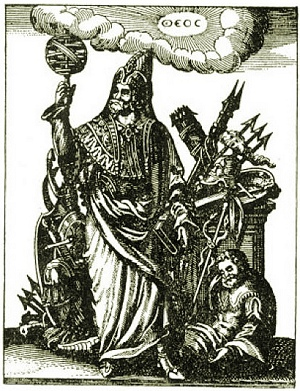

Sacred Texts Gnosticism and Hermetica
Buy this Book at Amazon.com
|  | Thrice-Greatest Hermes, Vol. 1by G.R.S. Mead[1906] |
This is the first volume of three of G.R.S. Mead's comprehensive survey of the literature attributed to the legendary Egyptian sage, Hermes Trismegistus.
X. ‘Hermas’ and ‘Hermes’